Technically, we could use a Text parameter. But the File/Folder/URL option allows the user (in this case, you, since it's private) to browse to specify a path, which is a nicer experience than copying and pasting a path.
After completing this lesson, you’ll be able to:
In a previous project, you created a workspace to calculate the neighborhood parks' size and average size.
The team using this workspace now wants to publish it to FME Flow. At the same time, they want to improve some of the functionality and implement a custom translation log.
As the creator of the original workspace, they ask you to carry out the following upgrades:
Start FME Workbench (2025.1 or later) and open the starting workspace:
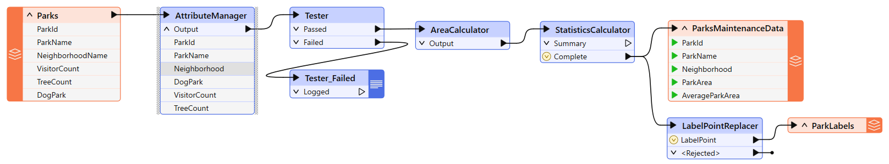
You can see that the workspace reads some MapInfo parks data, filters out dog parks, calculates park area and average area, creates labels, and writes out the data back to MapInfo.
There are two existing published parameters - one for the source dataset and one for the destination:
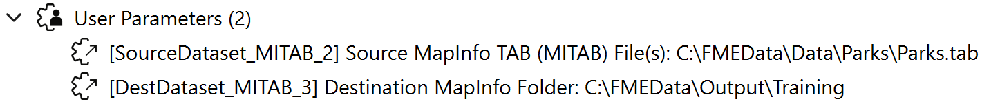
Since the source dataset will never change, we will create a new parameter for the destination and delete these two parameters. Delete them both now.
If we write the output to a folder specific to the current user, we need to know who that user is.
So, next, create a Text user parameter to ask for the user's name:
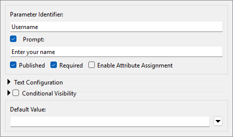
Ensure that the Required checkbox is checked; we want users to enter a value here. Also, make sure to uncheck Enable Attribute Assignment, as we don't want them to be able to select an attribute.
We can implement the requirements here in various ways; we'll use the version that involves sharing user parameters.
So, create a new user parameter of type File/Folder/URL. Uncheck Published and check Required, which means it will be a private parameter for us to use (not the end-user) and will be required. Additionally, uncheck Enable Attribute Assignment.
Set the Name field to OutputFolder, Items to Select to Folders, and Default Value to C:\FMEData\Output\Training.
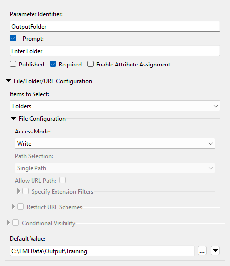
Click OK.
Technically, we could use a Text parameter. But the File/Folder/URL option allows the user (in this case, you, since it's private) to browse to specify a path, which is a nicer experience than copying and pasting a path.
If you encounter an Invalid Parameter warning, please double-check that your parameter configuration matches the screenshots above.
Note that unpublished parameters must have a default value, while published parameters do not require one. You will get this warning if you try to create an unpublished parameter without a default value.
Now, let's use the two parameters we've created.
Ensure you deleted the two existing source/destination user parameters in step 1; otherwise, this step won't work!
Locate the FME parameter for the Training [MITAB] writer's Destination MapInfo Folder parameter in the Navigator window and double-click it to open the editing dialog.
In that dialog, manually enter the following:
$(OutputFolder)\$(Username)
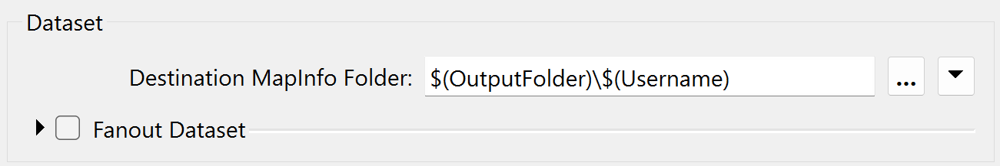
Alternatively, use the Text Editor, where you can add these by double-clicking them under User Parameters to reduce the chance of error.
You've now concatenated and embedded the two user parameters into the FME parameter.
When you run the workspace, you will be prompted to enter your name, and then the output data will be written to C:\FMEData\Output\Training\<Username>.
There are various ways we could have done this. We could have linked the OutputFolder parameter to
C:\FMEData\Output\Training\$(Username)and then linked it to the FME Destination MapInfo parameter. You'll see in a moment why we didn't do that!
The next task is to check whether dog parks are required in the output. The Tester transformer in the workspace shows that an attribute (DogParks) has a value of Y or N to denote its status. We need to ask the user and add their decision to the Tester.
Now, create a new user parameter. It will be a Choice type parameter that is not optional:
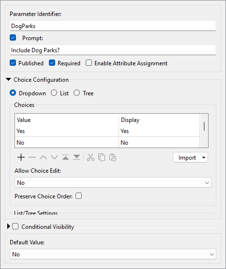
Set it up as a simple Yes/No question about including dog parks in the output. Uncheck Enable Attribute Assignment because—again—we don't want the user to be able to select an attribute.
Set the Default Value to No.
To use the DogParks parameter, you can open up the Tester parameters dialog. Add a second test clause:
$(DogParks) = Yes

Ensure the logic column is set to OR. When the workspace runs, the Tester will filter out dog parks if you choose not to use them. This concept of directing features depending on the value of a user parameter is beneficial to be aware of.
The next task is to allow the user to pick which attribute to use for a label.
As noted in the previous training section, if we publish the label parameter in the LabelPointReplacer, the user can enter text and select an attribute. We want them to have to select an attribute and not be able to enter text.
So, create a new user parameter of type Attribute Name. This one can be optional, as the user failing to select an attribute is equivalent to saying "no labels required":
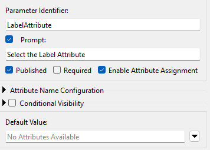
Click the Run button and see what appears in the list of prompts; you should see a parameter with the prompt "Select the label attribute." But look! The parameter shows "No Attributes Available." Why is this?
This is because the list of available attributes depends on where the parameter is used. Since we have yet to use the parameter, no attributes are available!
What if we used the parameter in a location with attributes A and B and a different location with attributes B and C? In that case, the only attribute available to the parameter is B. A parameter of this type will only show attributes that exist in all places used.
To use the LabelAttribute parameter, inspect the LabelPointReplacer parameters.
Remember (again from the previous section) that we can't just apply this user parameter to the Label FME parameter. That would return the attribute's name; we want the attribute value.
So, for the Label parameter, open the Text Editor and enter:
@Value($(LabelAttribute))
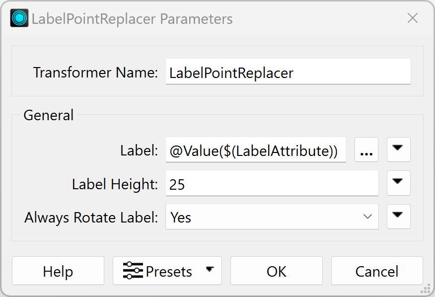
When the workspace runs, you are prompted to select an attribute to label the parks. If you choose no attribute (just point features), the LabelPointReplacer will not create any labels.
Note that we are using the
@Value()function to retrieve the value of the attribute name stored in the user parameter LabelAttribute. If you were to set the Label parameter to the user parameter directly, e.g.,$(LabelAttribute)without the@Value()function, the transformer would set the label to the attribute name instead of the value of that attribute.
The final task is to create a CSV format translation log. That is easy to do.
Use Build > Writers > Add Writer to add a new CSV format writer with the following setup:
| Writer Format | CSV (Comma Separated Value) |
| Writer Dataset | C:\FMEData\Output\Training |
| Writer Parameters | Overwrite Existing File: No Write Field Names Row: If Writing First Row |
| Add Feature Type(s) > CSV File Definition | Manual... |
When you click OK, the dialog will open for you to define the table schema.
On the General tab, set the CSV File Name as TranslationLog:

In the User Attributes tab, define the attributes User and Date:
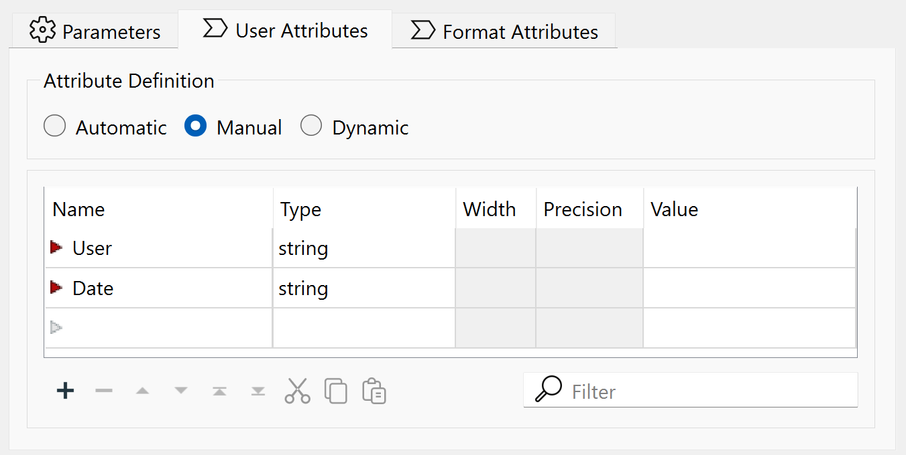
Click OK to close the dialog.
We need a single record to trigger this feature type, but only one feature; otherwise, we will get multiple records.
Place a Creator transformer down and connect it to the TranslationLog feature type:

We should set the output location for the log relative to where the user files are being written.
So, locate the destination dataset parameter for the CSV writer, right-click on it, and choose Link to User Parameter:

When prompted, select the OutputFolder (private) parameter we created earlier.
You might be wondering what the point of that last part was. Why did we link the parameter when both were already pointing to the same folder?
The point is that the MapInfo and CSV writers now share a parameter defining their output folder. If we wish to change where they are being written, we only need to edit the private parameter to fix both writers. That's why we did what we did in step #4.
If you don't believe me, try it and find out for yourself!
The last step is to provide values for the User and Date fields of the translation log (CSV writer).
Ensure the writer feature type is expanded so its attributes are visible and then right-click on the attribute called User on the feature type and choose the option to Edit Value:
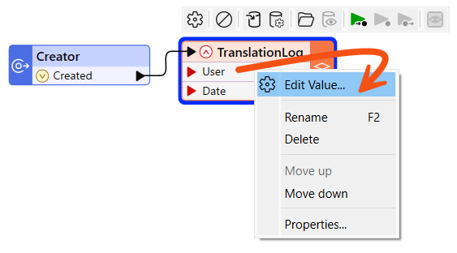
In the dialog that pops up, enter $(Username) for the value (you'll be prompted to select it as soon as you start to type):

This is another example of sharing user parameters. This parameter is now used here and in the MapInfo writer name.
Now, to provide a value to the Date attribute, repeat the above step for the Date field, but this time enter the DateTimeNow() function instead of a user parameter:
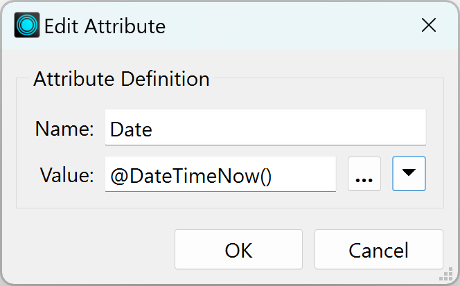
We are done! Save the workspace and then run it.
You should find that FME wrote your choice of data (with or without labels) to a folder under your name and added a translation record to the CSV file in the main folder. FME will add a row to the CSV each time the workspace runs, keeping a record of the translation.
If you have time for one more task, why not add a transformer to round the ParkArea and AverageParkArea attributes and create a user parameter to control how that rounding occurs? You can choose any parameter that would be best for allowing the user to select the number of decimal places to round to. It could be a Choice parameter, a Choice with an Alias parameter, a Number parameter, or something else.
You could also expand on the information in the CSV log file; for example, add the build of FME used in the translation, which is available as a parameter called $(FME_BUILD_NUM).